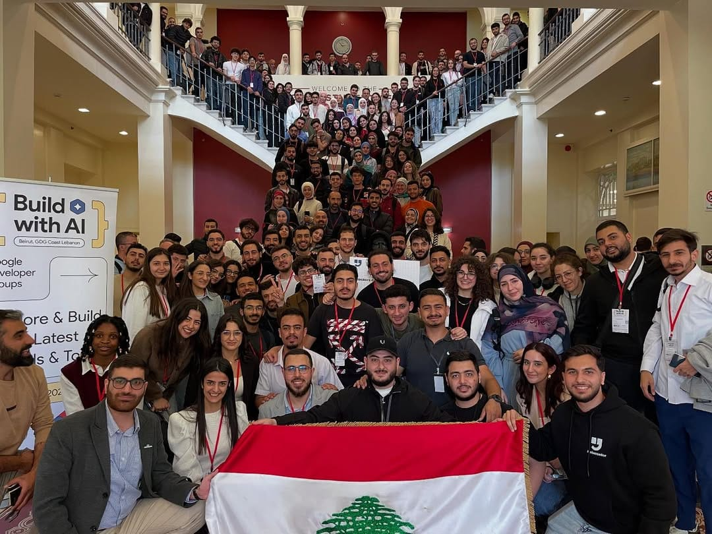

Google Developer Group on Campus AUB
- Helped officially register GDG as a club at AUB and grew it to the 2nd largest club in MSFEA after one semester.
- Organized large-scale events across multiple tech domains, including a Cybersecurity event with ~140 attendees and the Google Cloud Study Jams 2025 program featuring guided hands-on labs in AI and Google Cloud.
- Co-organized a Build with AI event with 600+ participants, one of Lebanon’s largest GenAI community events.